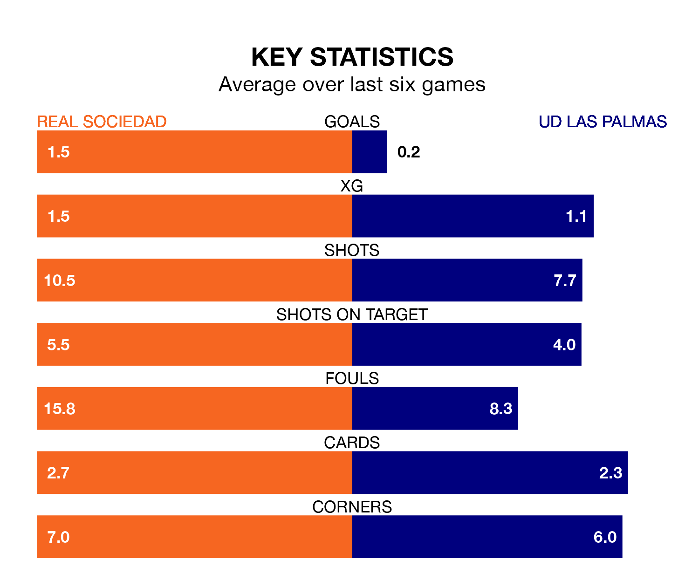

Real Sociedad are heavy favourites to keep all three points at home in Saturday lunchtime's kick-off against UD Las Palmas.
La Real, who sit sixth in La Liga with 33 games played, are priced at 1.3 to seal victory at the Reale Arena.
Sitting eight places and 14 points behind them in the table, Las Palmas are 8.5 to win with *Betting Company*, while the draw is at 4.9.
La Real are in reasonable form in La Liga, with three wins and two draws from their last six games.
With no wins and six losses over that period, Las Palmas's form is much worse – they have taken no points from 18, compared to la Real's 11.
With Álex Remiro between the sticks, the hosts can rely on one of the league's safest pair of hands. He has kept 12 clean sheets in his 32 appearances this season, and only one other 'keeper – Athletic Club Bilbao's Unai Simón – has been able to prevent the opposition scoring on more occasions in La Liga.
In the away side's net, Álvaro Vallés has seven clean sheets in 32 games. He has conceded a goal every 83 minutes, 30% more often than the 109 minutes between goals for Remiro Gargallo.
In the last 10 years, La Real and Las Palmas have played each other on nine occasions. They won three each, and they drew three times.
On average, la Real scored 1.1 goals and Las Palmas 1.0 in those matches.
Their last meeting was on August 25, when they played out a 0-0 draw.
With 30 goals in 33 games so far this season, Las Palmas are scoring at below the league average rate with 0.9 goals per game. But they are conceding fewer than average too, letting in 41 goals at a rate of 1.2 per game.
La Real, meanwhile, are above average scorers, with 1.4 goals per game, compared to a league average of 1.3. They have conceded 1.1 goals per game.
La Real's last match was on April 26, a 1-0 loss against Real Madrid.
Las Palmas lost 2-0 against Girona last time out, on April 27.
Updated: 10:44 (UTC), 30/04/24